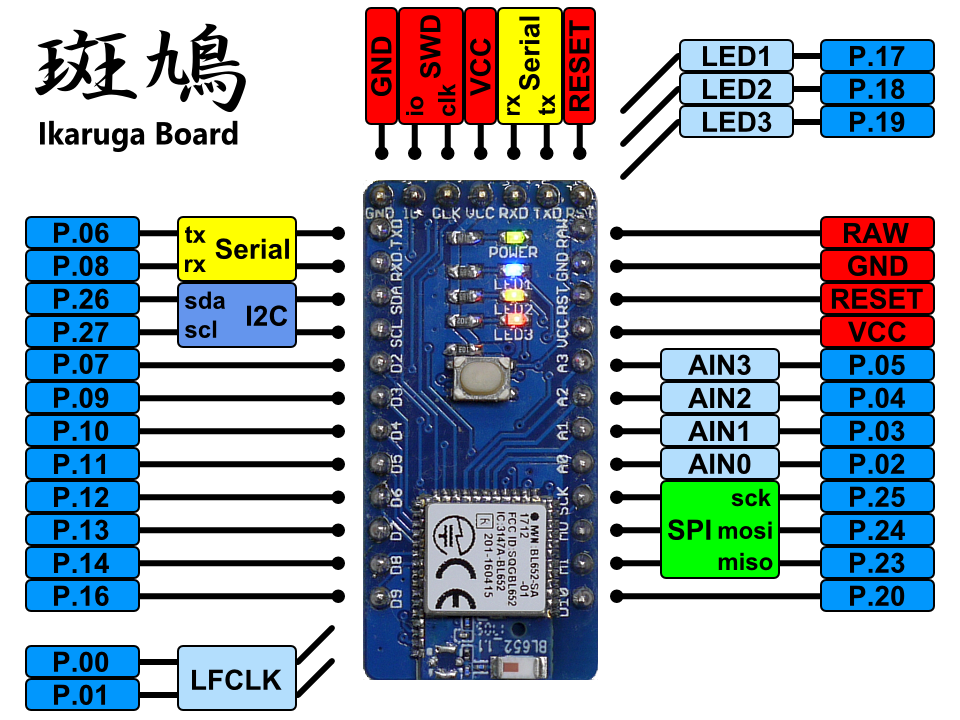
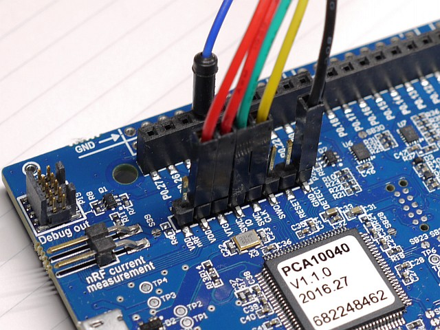
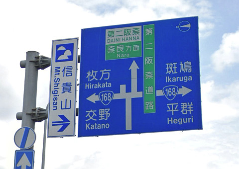

斑鳩ボード
概要
斑鳩ボードは、Nordic nRF52832搭載のBLEマイコンボードです。
仕様
- BLEマイコンnRF52832搭載 (Bluetooth 4.2 / ARM Cortex-M4F)
- 技適取得済みnRF52832モジュール Liard BL652を使用
- Arduino Pro Miniピン互換 (GR-KURUMIやGR-CITRUSとも共通)
- nRF52-DKの開発環境（mbedやnRF5 SDK）で開発
- nRF52-DK や BLE Nano V2のDAPLinkボードをアダプタとして使う
- 300mAのLDO、3色のLED、32.768kHzサブクロック、リセットスイッチを搭載
ピン配置

開発環境 (mbed)
- mbed Compiperのプラットフォーム選択でNordic nRF52-DKを選びます。
- BLE Nano V2のDAPLinkボードを使う場合、斑鳩を下図ように結線します。
- あとは、ふつうにmbedの要領で開発します。

nRF52-DKをアダプタに使う場合
最低限、結線が必要なのは以下の4本です。
- GND DETECT → ターゲットのGNDに接続
- VTG → ターゲットの電源電圧(VDD_nRF)に接続
- SWD CLK → ターゲットのSWDCLKに接続
- SWD IO → ターゲットのSWDIOに接続
加えて、nRF52-DKボードから斑鳩ボードに給電する場合には以下の2本を結線します。
- GND → ターゲットのGNDに接続
- VDD → ターゲットの電源電圧(VDD_nRF)に接続

Ｌチカ (mbed)
#include "mbed.h"
DigitalOut myled1(LED1);
DigitalOut myled2(LED2);
DigitalOut myled3(LED3);
int main() {
while(1) {
myled1 = 1;
wait(0.5);
myled2 = 1;
wait(0.5);
myled3 = 1;
wait(0.5);
myled1 = 0;
wait(0.5);
myled2 = 0;
wait(0.5);
myled3 = 0;
wait(0.5);
}
}
ファイル一覧
- hard/Ikaruga/
- Ikaruga.sch/brd: 回路/基板設計データ(Eagle形式)
- Ikaruta.pdf: 回路図(PDF)
- Ikaruga_BOM.xlsx: BOMリスト(Excel形式)
- Ikaruga.GBL/GBO/GBP/GBS/GML/GTL/GTO/GTP/GTS/TXT: ガーバデータ
- LICENSE: Apache Licence 2.0です。
- ただし、回路/基板設計は、Creative Commons Attribution Share-Alike 3.0です。
- README.md これ
注意
「斑鳩」は「いかるが」と読みます。
聖徳太子と法隆寺で有名です。難読地名とか言わないでください。
